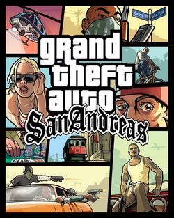

GTA: San Andreas
Um dos jogos mais icônicos do PS2, com um mundo aberto imersivo e uma história envolvente.
Uma homenagem aos melhores jogos de todos os tempos
Um dos jogos mais icônicos do PS2, com um mundo aberto imersivo e uma história envolvente.
Kratos, o guerreiro espartano, embarca em uma jornada épica contra os deuses do Olimpo.

Uma obra de arte interativa, onde o jogador enfrenta colossos gigantes em um mundo misterioso e solitário.